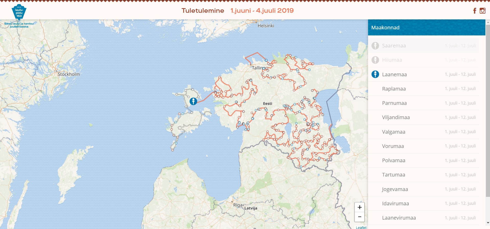

LAULUPIDU 2019 TULETULEMINE VEEBI- JA ÄPIPROTOTÜÜP
Laulupeo Tuletulemise ürituse jaoks tegime koos õpetaja Kristjan Janseni ja õppegrupiga ühistööna nii veebiprototüübi kui ka mobiiliäpi kujunduse. Veebiprototüübis keskendusin esialgse ürituse vaate toomisele Figma kujundusfailist CSS-i ja kaardirakendusele JSON failide ja GPS asukohtadega tegelemisele.

Mobiiliäpis tegin koostööd põhiliselt Triin Jussiga ja ühiselt valmis mobiilivaate esileht.